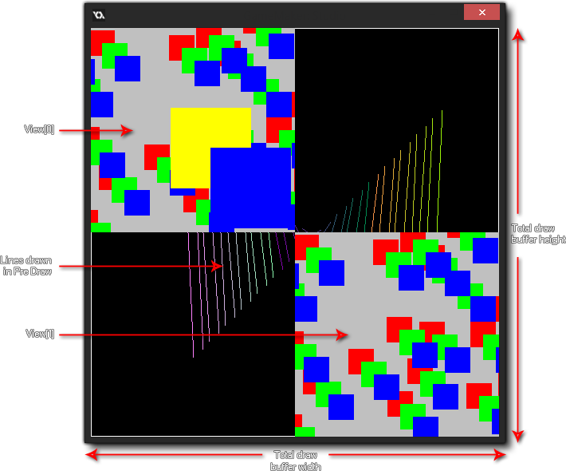

El Evento de sorteo es el que gobierna lo que ves en la pantalla cuando ejecutas tu juego, y se divide en varios subeventos separados para manejar mejor los diferentes requisitos de dibujo para tu juego. La siguiente imagen ilustra el orden en que se realiza cada evento:  El evento de dibujo normal se divide en tres tipos de subevento: el inicio del dibujo, los eventos de dibujo estándar y el final del dibujo. En general, solo necesitará usar el subevento Draw estándar y debe tener en cuenta que todas las instancias en una sala tendrán este evento activado en cada paso del juego, por lo que siempre se llamará a este sub-evento siempre y cuando La instancia tiene el indicador visible establecido en verdadero. Incluso si no ha definido nada para este subevento en las propiedades del objeto (es decir, sin código ni acciones), si el objeto tiene un sprite asignado, seguirá teniendo un subevento draw que se activará. Esto se debe a que GameMaker Studio 2 tiene dos formas de dibujar cosas en el sub-evento Draw: aplicación
El evento de dibujo normal se divide en tres tipos de subevento: el inicio del dibujo, los eventos de dibujo estándar y el final del dibujo. En general, solo necesitará usar el subevento Draw estándar y debe tener en cuenta que todas las instancias en una sala tendrán este evento activado en cada paso del juego, por lo que siempre se llamará a este sub-evento siempre y cuando La instancia tiene el indicador visible establecido en verdadero. Incluso si no ha definido nada para este subevento en las propiedades del objeto (es decir, sin código ni acciones), si el objeto tiene un sprite asignado, seguirá teniendo un subevento draw que se activará. Esto se debe a que GameMaker Studio 2 tiene dos formas de dibujar cosas en el sub-evento Draw: aplicación
- el sorteo predeterminado, que es cuando se define el sprite en las propiedades del objeto y no se coloca ninguna acción o código en el sub-evento de Draw normal, en cuyo caso GameMaker Studio 2 dibujará ese sprite. Tenga en cuenta que cualquier transformación que realice en otros eventos para cambiar la escala de la imagen, el índice, la mezcla, etc. se reflejará también siempre que el evento de dibujo esté vacío.
- el sorteo personalizado, que es cuando colocas código o acciones en el evento de sorteo. Esto le dice a GameMaker Studio 2 "Quiero controlar lo que dibuja para las instancias de este objeto" y anula completamente el dibujo predeterminado. Esto significa que, por ejemplo, puede tener un objeto con un sprite asignado, luego configurar el evento draw para dibujar texto y el sprite no se dibujará ya que no le ha dicho a GameMaker Studio 2 que lo dibuje junto con el texto.
El resto de los eventos de sorteo se explican en las secciones enumeradas a continuación:
Además del sub-evento principal de Draw, también tiene un sub-evento Draw Begin y otro de Draw End. Estos actúan exactamente igual que un subevento de Draw estándar (es decir, dibujarán lo que sea que pongas en cada paso del juego y para todas las vistas), pero no "dibujarán" nada por defecto si no se agregan a un objeto, y siempre se ejecutarán antes / después del subevento estándar de Draw. Por lo tanto, tendría el paso Empiece a dibujar para todas las instancias, luego el Dibujo para todas las instancias, y finalmente el paso de Dibujar final para todas las instancias.
De esta manera, puede dibujar cosas o establecer propiedades de dibujo en el paso Comenzar de dibujo en una instancia y asegurarse de que todas las instancias con un evento de dibujo estándar o un evento de finalización de dibujo usarán estas propiedades o dibujarán sobre lo que dibujó la primera instancia. Básicamente es una forma segura de garantizar que ciertas cosas se dibujen en ciertos momentos, al igual que los eventos Begin Step y End Step.
Hay algunas cosas que se deben tener en cuenta al dibujar cosas en GameMaker Studio 2, ya sea un sprite que está dibujando o un shader, o 3D:
- El evento de sorteo es un evento muy intensivo, ya que es uno de los eventos que ocupa más tiempo y recursos... para ese fin, nunca es una buena idea hacer nada en el evento de sorteo que no sea el dibujo. Así que guarde su código grande o acciones complejas para el evento Paso o Alarmas o cualquier otro evento que se ajuste, pero deje el evento de dibujo claro para el dibujo, ya que eso es lo que mejor hace.
- Si su objeto ha tenido el parámetro visible desactivado (para que no se dibujen las instancias del objeto), se omiten todos los eventos de dibujo (excepto el evento de cambio de tamaño ). Esto significa que hacer que una instancia sea invisible detendrá la ejecución de todo el código colocado en cualquiera de estos eventos, así que no ponga código esencial en los eventos de dibujo si no van a ser visibles.
- Lo que dibuje no tiene nada que ver con el motor de colisión que elija (tradicional o física), tal como lo definen las propiedades del objeto y el sprite (o máscara) que se le ha dado al objeto.
El tipo de subevento GUI del dibujo se incluye en la categoría Evento de dibujo y está diseñado específicamente para dibujar elementos de la GUI (Interfaz gráfica de usuario) que no se ven afectados por la escala o rotación de la vista. Esto significa que puede hacer que una instancia dibuje todos los elementos para su HUD sin tener que basar todas las posiciones de los elementos en la posición de la instancia dentro de la sala o la posición de la vista actual.
Al dibujar en estos eventos, es importante que entienda que las coordenadas del dibujo no cambian incluso cuando las vistas están activas y (0,0) es siempre la esquina superior izquierda de la superficie de la aplicación o la pantalla (vea la nota en la parte inferior de esta sección), y el ancho y la altura predeterminados son 1: 1 con la superficie de la aplicación. El orden de profundidad todavía se mantiene entre diferentes instancias en diferentes capas (por lo que una instancia en una capa inferior dibujará debajo de una capa superior) y también dentro de los eventos en sí, ya que el sub-evento Draw GUI Begin dibujará para todas las instancias primero, luego la GUI de Draw estándar dibujará para todas las instancias sobre eso, y finalmente se activa el sub-evento Draw Gui End.
De esta manera, puede dibujar cosas o establecer propiedades de dibujo en Draw GUI Begin en una instancia y asegurarse de que todas las instancias con una GUI de Draw estándar o Dibujar GUI Sub-eventos de finalización usarán estas propiedades o dibujarán sobre lo que tiene la primera instancia dibujado. Básicamente es una forma segura de garantizar que ciertas cosas se dibujen en ciertos momentos, al igual que lo hacen los sub-eventos Begin Step y End Step.
Estos eventos también se pueden utilizar junto con los subeventos normales de Draw (que se verán afectados por la posición de la vista, la escala y la rotación como de costumbre). Si no tiene un Evento de Dibujo pero sí tiene un Evento de GUI de Dibujo, entonces GameMaker Studio 2 seguirá dibujando el sprite por defecto para la instancia (si tiene uno) como normal.
Con relación a los otros subeventos de dibujo, los eventos de la GUI de dibujo siempre dibujarán sobre cualquier cosa dibujada en los eventos de dibujo normales. Por lo tanto, si tiene una instancia en una capa inferior con un evento de GUI de dibujo, dibujará sobre la instancia que está en una capa superior con un evento de dibujo normal. Si ambas instancias tienen un subevento GUI de dibujo, se respetará el orden de la capa.NOTA: este evento, de forma predeterminada, dibujará 1: 1 con el tamaño de la superficie de la aplicación, que normalmente es el tamaño de la sala o el puerto de visualización. Esto significa que cuando tenga activada la Corrección de la Relación de Aspecto en las Opciones del juego, la GUI no se dibujará sobre las barras negras que "forman el buzón" del juego. Este comportamiento se puede desactivar utilizando el display_set_gui_maximise función, y también puede bloquear el evento de la GUI a un tamaño específico que luego se escalará para ajustarse a las dimensiones de la superficie de la pantalla o de la aplicación automáticamente mediante el uso de la función display_set_gui_size.
Los subeventos Pre Draw y Post Draw forman parte de la categoría Evento Draw. Sin embargo, a diferencia de los otros eventos de Draw, estos se dibujan directamente en el búfer de pantalla, que será el tamaño del espacio de pantalla combinado para todas las vistas visibles actualmente, o el tamaño de la ventana si solo se usa una vista o ninguna. La siguiente imagen ilustra esto:  Por lo tanto, si está utilizando los eventos de sorteo Pre o Post, está dibujando en el objetivo de renderizado de pantalla completa que tendrá el mismo tamaño que la ventana a la que se ajustan todas las vistas. Si no tiene vistas activas, esto se establece en el tamaño de la ventana.
El sub-evento Pre Draw se activa antes que cualquier otro evento draw, y en él puede establecer valores, establecer propiedades de dibujo e incluso dibujar cosas sin preocuparse por las vistas o el tamaño de la capa GUI (el tamaño de la capa GUI puede ser el mismo) como el búfer de pantalla, pero puede que no, ya que puede configurar la resolución de la GUI en el código).
Vale la pena señalar que este evento ocurre antes de que se borre el búfer de la pantalla, lo que significa que si no desactiva el borrado de la vista en el editor de sala, no se verá nada que aparezca en el evento de Pre-Dibujo, ya que la primera vista lo borrará. Si desea poder ver a través de las vistas en sí mismas, o si no está usando vistas en absoluto, entonces también debe haber configurado el color de fondo para que tenga un alfa de 0 en el Editor de la sala.NOTA: Si desactivas estas opciones, puedes notar artefactos no deseados que se dibujan en la pantalla cuando se prueba el juego (como "rastros" de las instancias). Esto se debe a que está dibujando directamente sobre el marco anterior del búfer de dibujo sin que se borre. Sin embargo puedes usar draw_clear_alpha para hacer esto usted mismo.
El sub-evento Post Draw se dispara después de los eventos de draw estándar, pero antes de los eventos de Draw GUI. Al igual que el evento Pre Draw, se basa en el tamaño del tamaño del búfer de pantalla y se coloca antes de los eventos de la GUI de Draw para permitirle realizar efectos de postprocesamiento y otras cosas en una pantalla completa de forma simple y sencilla sin interferir con ningún Elementos de HUD / GUI que puedes tener en tu juego.
Este tipo de evento se incluye en la categoría Evento de dibujo, y aunque en realidad no dibuja nada, reacciona a los cambios en el lienzo de dibujo, específicamente, está diseñado para reaccionar al cambio en el tamaño del lienzo de UWP cuando la ventana del juego es "rompió".
En la plataforma de destino UWP es importante que capte cualquier cambio de tamaño del lienzo del juego desde el "ajuste" de la ventana del juego (cuando el usuario arrastra la ventana al lado de la pantalla, por ejemplo). Este evento hará exactamente eso y se activará cada vez que se cambie el lienzo, lo que le permitirá agregar un código personalizado aquí que cambiará el tamaño de la vista o cambiará la posición de los elementos de HUD según sea necesario. Esta función se proporciona como una forma conveniente de evitar tener un código de evento de paso que verifique estas cosas todo el tiempo.NOTA: ¡No puedes dibujar en este evento! Se activa al cambiar el tamaño del lienzo y es solo para capturar este cambio... cualquier dibujo que deba hacerse aún debe estar en uno de los otros eventos de dibujo.